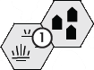

Evoker Matthias d'Slaytonthorpe pores over his map of the Barrowmaze, trying to concentrate through the mild headache brought on by much study in poor lighting. But he mustn't use any more magic than strictly necessary, for later today it may mean the difference between life and death.
As his candle burns down, he studies the unrolled map that lies before him on the study's teakwood desk, committing it to his eidetic memory. The candle dies, leaving the scholar-mage in smoke-wreathed darkness.
He moves deftly without seeing, first into the hallway where the susurration of the ventilated air breathes overhead, then down three doors, knocking lightly at a door before pushing it open without invitation. "Aury, you ready?"
A protesting groan greets him from a room as lost in darkness as is the hallway, as was the mage's study. "Mattie, for the Powers' sakes, it's the middle of the night, still!"
"It isn't, and I'll never become accustomed to a cleric of the Unknown One casually referencing the Powers. It is perhaps two hours before sunrise. Hardly the middle of the night." He reaches out, slaps his friend's booted feet at the foot of the bed with perfect precision, despite the darkness. "You ass! You're dressed already, chapedro!"
A low chuckle, then a thud as feet hit the floor. "Of course! Today we will make our chapterhouse brethren proud, and collect enough coinage to fuel the furnace the rest of the month." The sound of flint on steel, and sparks momentarily break the darkness.
"No, no. Save it. We don't want to draw attention from the villagers," the mage insists. "Besides, by the time we get into unfamiliar environs, the sun will be up. Let's go, Aury. There's no rest for Seekers."
Fifteen minutes later, Evoker Matthias and Apostle Auriochos emerge from the subterranean chapterhouse, carefully lowering the warded manhole cover behind them. "Damnation, it's frigid!" Mattie blows on his hands. Behind our two adventurers, The Spine looms as a faint, shadowy, immensity silhouetted against a marginally lighter background in the predawn light, towering above Helix both physically and in the minds of the villagers.
The two set off due south out of Helix, passing through the ring of trees encircling the village, and continuing onward past the Pellon Field that was once a parking lot -- not that our two intrepid heroes realize that, for hundreds of millennia and more than fifty feet of sediment, rock, and clay now separate them from it.
Fortunately, though very cold, the predawn is not windy. "You say the Far Ancients had milder weather this time of year," Aury says quietly as the two traipse along, "but how can you know that's reliable when no records still exist from so long ago?"
The scholar-mage turns his head toward the Mystic, but it is still too dark to see more than shades of gray in the poor light. "First of all, we don't know that records don't exist from that far back; we simply haven't ever found any. For all I know, such records have been found and lost again a dozen times since--"
"We've been over this, yes," interrupts Aury. "Just remind me of the details of your chain of logic." There is silence for long seconds, broken only by the muted footfalls on frozen ground.
"I sometimes forget that you don't have my perfect recall," the mage answers. "Very well, then: Abbot Fornost d'Voivodja had a vision in PR 102, over a century ago now. In it, he visited a time in the remote past, the time of the Far Ancients."
"The Forebearers," supplies the cleric, a hint of awe in his voice.
"Yes," answers Matthias. "They lived in a time -- as seen in Abbot Fornost's vision -- when only men had rational thought, a time when mankind ruled the planet and possessed knowledge and tools beyond our kin." The two Seekers have left Helix several miles behind, heading southwest from the village. The ground has begun to display periodic sogginess, even in the freezing cold. "We're nearing the Barrowmoor," Mattie comments. "Ground's getting soggy..."
"Yes," observes Aury, "and dawn is about to break. It's been a while, but I think we'd reach the Barrowmoor sooner if we angled more southward."
"Your memory serves adequately," agrees the mage, "but we have a stop to make along the way." The mage leads the pair along a game trail, still traveling southwest from their village. The trails inclines, begins to ascend. Minutes later, the two are at a high point of elevation with respect to their surroundings. Sunlight peeks over the horizon, its rays bringing the first bit of color into the day as it slices across their trail. The two draw up to the lip of a ridge and Matthias glances dawn upon a crude settlement some dozens of yards below.
"Et es wie spet not brought deaqu tam sep lizardmen," speaks a guttural voice from behind the two men. Auriochos wheels round, mace in hand, and raised high to deliver a blow. "Hold!" Matthias says firmly to his companion, as the mage turns to face a pair of goblins, both of whom have drawn bows trained on the two Seekers. "Easy, Mattie. We are expected. They are merely being properly cautious. Addressing the goblin on his left, Matthias says, "Et es wie spet not brought deaqu tam sep lizardmen!" Phonetically, it sounds like "Eat ess we-spate no-bro deak tim-sape, lizardmen!"
The goblin, white face-paint standing out boldly in bizarre patterns against his orange skin and unruly shock of black, dirty hair, breaks into a wide grin. He backhands his companion in the stomach and barks a laugh, as if to say, "Ha! Check out these hoo-mans!" His companion, a foot taller at five feet even, has green skin and no face paint, but a gold nose ring is prominent where it dangles against his upper lip. Our heroes are unaware they're each thinking the same thing simultaneously: What does he do with that when he eats?